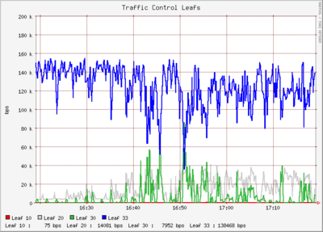

Traffic control is a complex beast to fly without proper instrumentation. Fortunately, there are a number of tools at your disposal to help you formulate and monitor your configurations. Often taking measurements is as simple as polling the tc binary for statistics and generating graphs. You can certainly write your own tools, as many have. I intend to discuss a few tools I use to monitor my own configurations.
Before you can create an effective traffic control hierarchy, you may be wondering what kind of traffic exists on your network. You can use iptraf to explore your network traffic interactively. You can explore TCP flows using tcptrack and libpcap expressions. Both sport ncurses interfaces. Below is output from iptraf's Statistical breakdown -> By TCP/UDP port output.
/ Proto/Port --------- Pkts --- Bytes -- PktsTo - BytesTo PktsFrom BytesFrom --\ | TCP/ftp-data 12 640 10 560 2 80 | | TCP/ftp 67 5024 44 2972 23 2052 | | TCP/ssh 119 16992 63 7832 56 9160 | | UDP/domain 42 3859 0 0 42 3859 | | TCP/60 9 508 7 404 2 104 | | TCP/gopher 4 240 4 240 0 0 | | TCP/www 60 8399 41 6750 19 1649 | | TCP/81 4 240 4 240 0 0 | | TCP/85 4 240 4 240 0 0 | | TCP/rtelnet 4 240 4 240 0 0 | | TCP/pop3 30 3980 16 1552 14 2428 | | TCP/auth 32 2652 20 1488 12 1164 | | UDP/113 13 689 13 689 0 0 | | TCP/140 12 7728 6 7452 6 276 | | TCP/466 4 240 4 240 0 0 | | TCP/505 31 2441 16 1278 15 1163 | | TCP/662 29 2026 15 974 14 1052 | | TCP/moira_upda 9 540 9 540 0 0 | | TCP/778 11 660 11 660 0 0 | |
It's exceeding helpful to have a graphical representation of any complex class hierarchy you create. I suggest Andreas Klauer's tc-graph.pl for the task. You can obtain a copy from his FairNAT project page. FairNAT is a Netfilter based Linux firewall with extensive QoS features.
tc-graph.pl is easy to use. It's written in Perl. Once you've downloaded a copy, ensure it's executable. You will want to edit the script and verify the correct path for your system's tc is specified. Also, ensure the interface specified is the one you want to build a class hierarchy graph for.
Next, run the script and pipe the output to a file. The file will contain GraphViz commands. You can pass the file off to dot, part of the GraphViz suite of tools, to generate an image of your hierarchy.
jasonb@rebecca:~/src$ perl tc-graph.pl > mygraph.dot jasonb@rebecca:~/src$ cat mygraph.dot | dot -Tgif > mygraph.gif |
After running the above commands, you should have an image containing a graph of your traffic control class hierarchy. Some example graphs can be found in the section about class hierarchies, discussed earlier. I modified the copy of the script I used so a smaller font size was used and extra details were removed for simplicity's sake. Other than that, your images will look the same.
When working with configurations, I find it helpful to monitor the bandwidth utilization of each leaf qdisc, to verify the configuration is responding as anticipated. The simplest way to monitor bandwidth utilization is to parse the output of the tc binary and insert the values into a RRDTool database in the same fashion you would monitor the counters for a switch or router.
I wrote a utility in Perl to parse tc output and insert the transferred bytes value for a configuration's leaf qdiscs into a RRDTool database. The utility, polltc, can be obtained from my software Web page.
polltc can operate in either of two modes. In diagnostic mode, it will update a RRDTool database directly and generate a graph. It can also operate as a plugin for Munin, for long term trend analysis.
Before you can start using polltc_, you need to modify a few values near the start of the script. Specifically, you need to specify a path where you want files to be stored. I access my graphs via a Web server, so I dump all my files in a directory readable by my Web server.
You may not wish for polltc_ to create a graph when it runs every ten
seconds in diagnostic mode. If such is the case, change $do_graph
to 0.
You must specify the path to your tc binary. For testing purposes I use my own tc binary in my home directory, so you will need to change this or nothing will work.
Once you have changed the necessary options above, you can start using polltc_. The interface being probed for information is gathered from the name of the file itself. Create a symlink with the interface name so polltc_ knows what interface to probe. (eth0, ppp1, ect.)
$ ln -s polltc_ polltc_eth0 |
Now, you can run polltc_eth0 to gather information about your traffic control configuration on eth0.
$ perl polltc_eth0 test & |
An RRD database will be created and populated with values every 10 seconds. If you chose to enable graphing, a one hour and a twenty-four hour graph will be created and written to disk in the same location as the RRD database.

If you wish to use it as a Munin plugin, you will want to symlink into your /etc/munin/plugins directory.
# ln -s polltc_ /etc/munin/plugins/polltc_eth0 |
polltc_ supports Munin 'autoconfig' and 'config' and when run without any arguments, polltc_ will return values for the interface it is being run against as expected by Munin.